<?xml version="1.0" encoding="UTF-8"?><rss version="2.0"
	xmlns:content="http://purl.org/rss/1.0/modules/content/"
	xmlns:wfw="http://wellformedweb.org/CommentAPI/"
	xmlns:dc="http://purl.org/dc/elements/1.1/"
	xmlns:atom="http://www.w3.org/2005/Atom"
	xmlns:sy="http://purl.org/rss/1.0/modules/syndication/"
	xmlns:slash="http://purl.org/rss/1.0/modules/slash/"
	>

<channel>
	<title>What&#039;s new in Hike Archives - Hike POS Software</title>
	<atom:link href="index.html" rel="self" type="application/rss+xml" />
	<link>https://hikeup.com/</link>
	<description></description>
	<lastBuildDate>Mon, 18 Apr 2022 12:50:46 +0000</lastBuildDate>
	<language>en</language>
	<sy:updatePeriod>
	hourly	</sy:updatePeriod>
	<sy:updateFrequency>
	1	</sy:updateFrequency>
	<generator>https://wordpress.org/?v=5.9.3</generator>

<image>
	<url>https://hikeup.com/wp-content/uploads/cropped-favicon-3-32x32.png</url>
	<title>What&#039;s new in Hike Archives - Hike POS Software</title>
	<link>https://hikeup.com/</link>
	<width>32</width>
	<height>32</height>
</image> 
	<item>
		<title>Hike Update: April 2022</title>
		<link>https://hikeup.com/blog/hike-update-april-2022/</link>
		
		<dc:creator><![CDATA[Hiren Savjiyani]]></dc:creator>
		<pubDate>Mon, 18 Apr 2022 12:42:02 +0000</pubDate>
				<category><![CDATA[What's new in Hike]]></category>
		<guid isPermaLink="false">https://hikeup.com/?p=55975</guid>

					<description><![CDATA[<p>Hello Everyone, It&#8217;s certainly not an April Fools joke when we say that 2nd release of the year is ready to go and includes 30 new features! Here is the list of key updates and new features for your review: Purchase Order &#8211; Discount on the Product Line Items (Supported plan/s: Hike Plus) You can&#8230; <a href="../../../hike-update-april-2022/index.html" class="more-link">Read more</a></p>
<p>The post <a rel="nofollow" href="../../../hike-update-april-2022/index.html">Hike Update: April 2022</a> appeared first on <a rel="nofollow" href="../../../../index.html">Hike POS Software</a>.</p>
]]></description>
										<content:encoded><![CDATA[
<p>Hello Everyone,</p>


<p>It&#8217;s certainly not an April Fools joke when<span id="more-55975"></span>  we say that 2<sup>nd</sup> release of the year is ready to go and includes <span style="font-weight: 600;color: red;">30 new features!</span> Here is the list of key updates and new features for your review:</p>


<h2><strong>Purchase Order &#8211; Discount on the Product Line Items</strong></h2>


<p>(Supported plan/s: Hike Plus)</p>


<p>You can now easily add discounts to purchase orders. Line item and order level consolidated discounts, both are made possible.</p>


<figure class="wp-block-image size-large"></figure>


<p>Having so many columns on the PO page makes it easier to use features but it might get a tiny bit congested so we have consolidated some ‘read-only ‘columns and added them as a pop-up window. So they are they if you’d like to view the details but won’t come in your way.</p>


<figure class="wp-block-image size-large">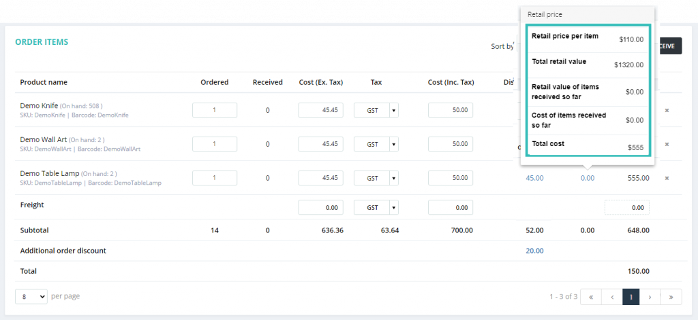</figure>


<h2><strong>Customer Profile Changes for Existing</strong> <strong>Order</strong></h2>


<p>(Supported plan/s: Hike Plus)</p>


<p>Easily define who makes customer association changes to an existing order. You can easily apply it via role permissions for staff users. In detail, the permission is associated under the point sale permissions with the staff user permissions.</p>


<div class="wp-block-image"><figure class="aligncenter size-full"></figure></div>


<h2><strong>Detailed Transaction Export for Sales Summary Report</strong></h2>


<p>(Supported plan/s: Hike Plus)</p>


<p>The sales summary report lets you view transaction summary for a selected date range. Now, when you export this report using the Excel format, it lets you choose a &#8216;detailed&#8217; report export. The report includes amount breakdowns for each day for your selected period. You can export the same from <strong>Reporting &gt; Sales Summary &gt; Export &gt; Detailed (Excel).</strong></p>


<figure class="wp-block-image size-large"></figure>


<h2><strong>Serial Number Details for Sales by Item Report</strong></h2>


<p>(Supported plan/s: Hike Plus)</p>


<p>The sales by item report, as the name suggests, lets you view total sales by item for a specified period. To provide further visibility for items with serial numbers, it lets you drill-down further to see associated transaction numbers for each serial number.</p>


<figure class="wp-block-image size-full"></figure>


<h2><strong>Display Order Items Group by Product type</strong></h2>


<p>(Supported plan/s: Hike Plus)</p>


<p>Many of Hike users requested this and so we are pleased to include this feature in this release.&nbsp; With this feature activated, the item cart and order receipt will display items grouped by type.</p>


<p>This feature can be very useful for a variety of businesses. For example, if you were running a quick-serve business, all food orders can be grouped by type like &#8216;Drinks&#8217; and &#8216;Burgers&#8217; to make order preparation easier. It is equally useful for bicycle and furniture stores when they are customizing orders or arranging deliveries.</p>


<div class="wp-block-image"><figure class="aligncenter size-full">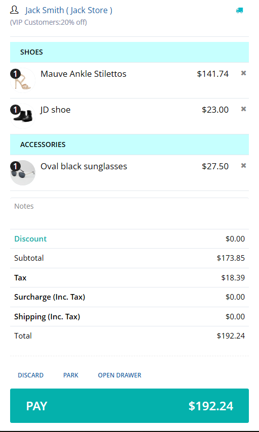</figure></div>


<div class="wp-block-image"><figure class="aligncenter size-full">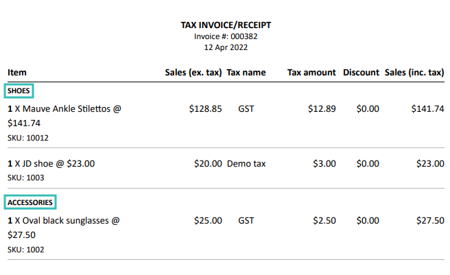</figure></div>


<p>To activate this feature, please go to <strong>Store Setup &gt; General &gt; General Rules &gt; Point of Sale</strong>. As mentioned on the screen below, simply click on <strong>‘Display ordered items grouped by type (cart, invoice)</strong>’, and all set.</p>


<div class="wp-block-image"><figure class="aligncenter size-full"></figure></div>


<h2><strong>Account Receivables Statement &#8211; Add Bank Details</strong></h2>


<p>(Supported plan/s: Hike Plus)</p>


<p>For &#8216;On account&#8217; sales, the monthly statements are widely used to advise of outstanding amounts and request payments. Now, Hike&#8217;s on-account statement includes an extra section for you to add texts such as bank details. You can also use this space to write holiday greetings or simply mention your strict payment terms! You can add the banks&#8217; details under the <strong>Reporting &gt; Customer &gt; Acc. Receivables Statement &gt; Add Bank Details.</strong></p>


<div class="wp-block-image"><figure class="aligncenter size-large">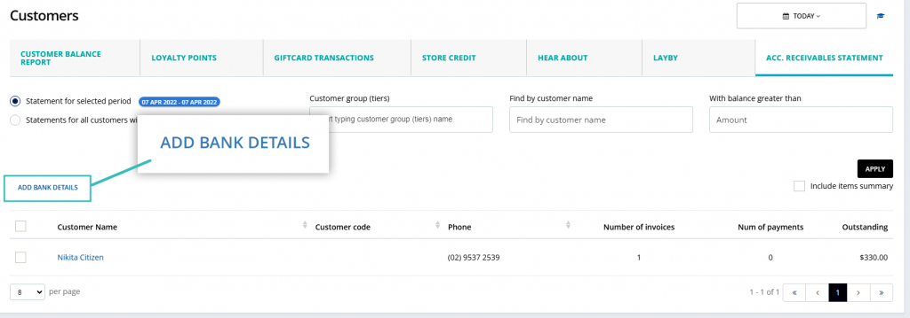</figure></div>


<p>You can add multiple bank details together in detail sections if you are accepting the payments in multiple banks.</p>


<figure class="wp-block-image size-full"></figure>


<h2>Quickly Add Products into Purchase Order/ Inventory Transfer</h2>


<p>(Supported plan/s: Hike Plus)</p>


<p>Now, you can add products to purchase orders or inventory transfers directly from the product listing page for quick access by just selecting the options. You can also edit the order quantity as required.</p>


<div class="wp-block-image"><figure class="aligncenter size-full"></figure></div>


<p>Here you can see the quickly created PO details where you can create a new PO or add it to the existing one.</p>


<figure class="wp-block-image size-large">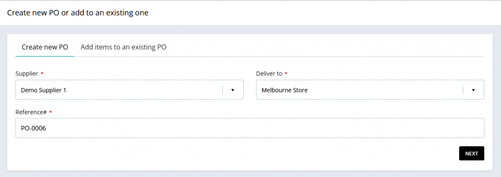</figure>


<p>It is also the same for transfer too.</p>


<figure class="wp-block-image size-large"></figure>


<h2><strong>Purge Data for a Particular Time Range</strong></h2>


<p>(Supported plan/s: Hike Plus)</p>


<p>Hike has a data &#8216;Purge&#8217; option accessible from within &#8216;My account&#8217; section. Most Hike users prefer to get their staff training on own product data and as such practice transactions are performed after actual products are imported to their Hike account. Though these dummy transactions need to go as soon as the practice run is over and the store is open for business. That&#8217;s when the purge feature comes in handy to remove dummy transactions without having to recreate everything. You didn&#8217;t know about this feature? Those dummy transactions are still there corrupting your sales reports?</p>


<p>Now you can purge past dummy transactions by selecting a specific date range.</p>


<p>Please be careful when using this feature. Once purged, it’s purged!</p>


<figure class="wp-block-image size-full"></figure>


<h2><strong>Directly Add Quantity into PO &amp; Transfer</strong></h2>


<p>(Supported plan/s: Hike Plus)</p>


<p>Hike purchase order and transfer section lets you search for products. Now you can also add order quantity in the same pop-up window so you don&#8217;t have to go through the added items list to update the quantity.</p>


<figure class="wp-block-image size-large">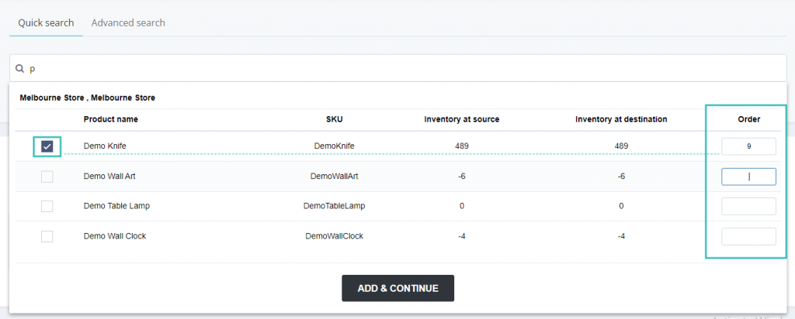</figure>


<h2>Larger Text Size for Price Labels</h2>


<p>(Supported plan/s: All)</p>


<p>Now, you can print larger text for price tags of the product label from Hike. This can be done using the printing option “<strong>Avery 3&#215;11 (alt)</strong>” while printing the price tag on the A4 Size label sheet.</p>


<div class="wp-block-image"><figure class="aligncenter size-full"></figure></div>


<div class="wp-block-image"><figure class="aligncenter size-full">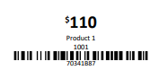</figure></div>


<h2><strong>Sales Transaction Report &#8211; Date and Time in Separate Column</strong></h2>


<p>(Supported plan/s: All)</p>


<p>As you know, Hike lets you generate and export sales transactions reports. It includes various details for you to understand the transactions happening at your store. We’ve just improved the feature so you have better visibility into the date and time of each transaction as well. You can see this by exporting the sales transactions in excel from reporting section.</p>


<figure class="wp-block-image size-large"></figure>


<h2>Receipt Template &#8211; Indent for Customer Address</h2>


<p>(Supported plan/s: All)</p>


<p>We have improved to manage the indent of customer addresses for the envelope window. To use this feature, you will find a checkbox to set the address for the envelope window. The template can be saved for future use with this setting like earlier.</p>


<figure class="wp-block-image size-large"></figure>


<h2><strong>Sales Summary Report &#8211; Transaction Summary List</strong></h2>


<p>(Supported plan/s: Hike Plus)</p>


<p>The sales summary report provides an excellent review option to see how your business is doing. This graphical report is now combined with a summary list table for better visibility into the report.</p>


<figure class="wp-block-image size-large"></figure>


<h2>Make Customer Birth Year Optional</h2>


<p>(Supported plan/s: Hike Plus)</p>


<p>Sometimes customers may not want to share their birth year. To make it easier for them and you, you can disable the collection of birth year by default.</p>


<figure class="wp-block-image size-full"></figure>


<h2><strong>Gift card sales &#8211; Edit Gift card details</strong></h2>


<p>(Supported plan/s: Hike Plus)</p>


<p>Hike offer a very handy built-in gift cards feature. We have improved this feature for you with this update. Now you can edit gift card details so that recipient email address, name and notes can be updated. This will allow you to correct if any mistakes were made at the time of selling the gift card.</p>


<figure class="wp-block-image size-large"></figure>


<p>Also, The Store admin can manage this functionality by controlling restrictions with the User’s right permission.</p>


<div class="wp-block-image"><figure class="aligncenter size-full"></figure></div>


<h2><strong>Sales History &#8211; Customer Name Edition for Walk-In</strong></h2>


<p>(Supported plan/s: Hike Plus)</p>


<p>Hike lets you create a sale transaction without customer name. All transactions where customer name is not provided show &#8216;Walk-in&#8217; for the customer name. Now you can edit even customize this &#8216;walk-in&#8217; placeholder name the way it suits you. For example, for all walk-in sales during an event, you can rename it to &#8216;walk-in at expo&#8217; or &#8216;walk-in at ABC event&#8217;. Though customer details are still not added to the sale, it provides a bit more clarity in regards to the transaction details.</p>


<figure class="wp-block-image size-large"></figure>


<h2><strong>Sales report &#8211; Barcode Column</strong></h2>


<p>(Supported plan/s: All)</p>


<p>We have added some improvements for Sales by Items report. In this report now you can view one more column Barcode of the product. You can also add or remove this column by editing the grid setting for this report.</p>


<figure class="wp-block-image size-large">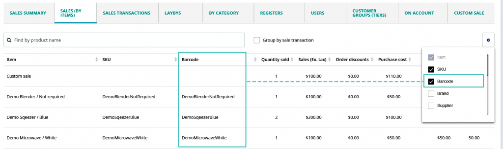</figure>


<h2><strong>Non-Discountable Items</strong></h2>


<p>(Supported plan/s: Hike Plus)</p>


<p>In a business, some of the specialized product needs to be excluded from the discount. To fulfill this, we have added the feature called “<strong>Exclude this product from any and all discount offers</strong>”. This will help you to exclude the product from applying the discount at any level. You can apply this setting while adding the product from Hike.</p>


<figure class="wp-block-image size-full"></figure>


<h2><strong>Cart Display &#8211; Based on Latest Item</strong> <strong>Scanned</strong></h2>


<p>(Supported plan/s: Hike Plus)</p>


<p>Hike now lets you choose the order of added items in cart. When you are adding products to the cart on POS page, Hike shows items by order of entry and so the first added item remains on top of the list. Now you can change this to show the last added items on top of the list to suit your workflow. You can enable this feature by activating it from <strong>Store Setup &gt; General Rules &gt; Point of Sale &gt;Cart item display &#8211; latest added to the bottom.</strong></p>


<figure class="wp-block-image size-full"></figure>


<h2><strong>Improvements to the purchase order and supplier details</strong></h2>


<p>(Supported plan/s: Hike Plus)</p>


<p>We have made some changes in the purchase order and supplier details which include: </p>


<ul><li>Now, you can add multiple email addresses for one supplier while creating a supplier in Hike.</li></ul>


<figure class="wp-block-image size-large">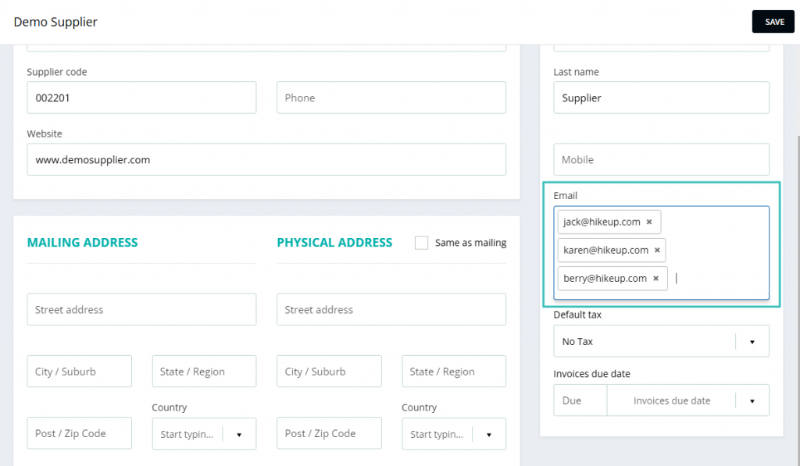</figure>


<ul><li>Multiple email addresses of a supplier can be selected when emailing PO to the supplier.</li></ul>


<div class="wp-block-image"><figure class="aligncenter size-full">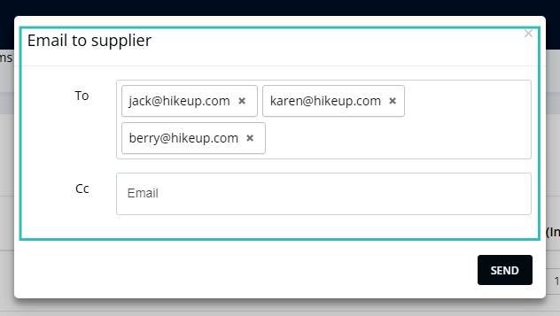</figure></div>


<ul><li>The notes added to a supplier profile are auto-populated into every purchase order sent to this supplier. This helps define any regular delivery or other instructions relevant to your suppliers.</li></ul>


<h2><strong>Sales Summary Report &#8211; Back Order Excludes</strong></h2>


<p>(Supported plan/s: Hike Plus)</p>


<p>Hike now lets you decide if you wish to include or exclude backorders in sales reports.To apply this feature in your store go to Store <strong>Setup &gt; General Rules &gt; Reporting &gt; Enable the setting </strong>as per the below screen capture.</p>


<figure class="wp-block-image size-full">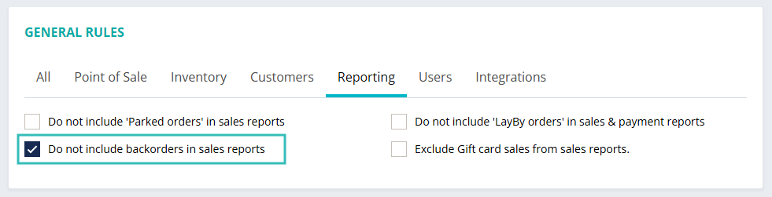</figure>


<h2><strong>Inventory Logs &#8211; Date and Timestamp</strong></h2>


<p>(Supported plan/s: All)</p>


<p>In inventory log, we have now added timestamp beside the date to understand which transaction first took place in event where there are multiple entries for a same date. Also, a new sorting option on this page lets you see latest or earliest transactions first as required.</p>


<figure class="wp-block-image size-large"></figure>


<h2><strong>Sales Report &#8211; Sorting the column</strong></h2>


<p>(Supported plan/s: All)</p>


<p>In the sales report section, now you can sort results using a majority of data columns. Previously the sorting feature was available only for the order ID and the data columns. You can see these filters below reports:</p>


<ul><li>Sales transactions</li><li>LayBy</li><li>On account</li><li>Custom sale</li></ul>


<figure class="wp-block-image size-large">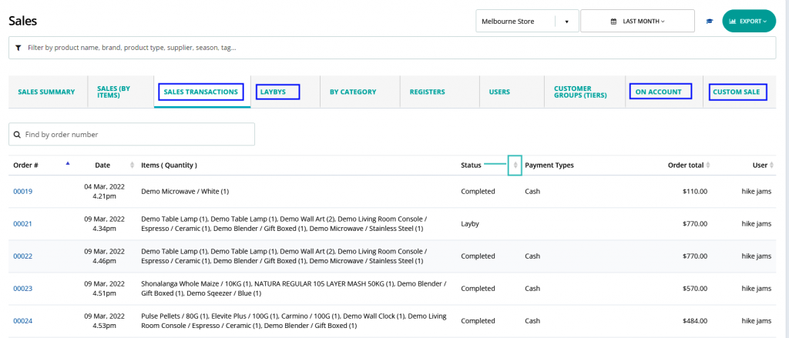</figure>


<h2><strong>Express user login</strong></h2>


<p>(Supported plan/s: Hike Plus)</p>


<p>In Hike, you can currently change between users by entering your 4-digit PIN. However, before you enter the pin, you are required to select your user profile. This new feature allows you to bypass user profile selection and thus reducing one step in the process. Simply enter your PIN to log in to your profile. To ensure that Hike can identify each user in your organization, it is required that all users have unique 4-digit pins.</p>


<p><a></a>For existing users, if you have identical pins, Hike will prompt you to get all your users to reset their pins without identifying conflict PINs to preserve user privacy. When resetting pins for all users in that situation, Hike will ensure that duplicate pins are not allowed to be set.</p>


<p>This setting can be enabled from the<strong> Store Setup &gt; General Rules &gt; Users &gt; Use unique 4-digit pin for all users and allow changing between users by simply entering the pin</strong> as shown in the screen capture.</p>


<figure class="wp-block-image size-full"></figure>


<h2><strong>Custom report &#8211; Quotes</strong></h2>


<p>(Supported plan/s: Hike Plus)</p>


<p>Hike lets you create custom reports so you can generate bespoke reports that meet your requirement. Until now, you were able to create custom reports relating to inventory, delivery and inventory movement. This update brings a new addition to the custom reports section: Quotes. This will help you better manage all issued quotes. You can set it in the <strong>Reporting &gt; Customer Report &gt; Report Sections &gt; Select Quotes.</strong></p>


<div class="wp-block-image"><figure class="aligncenter size-full">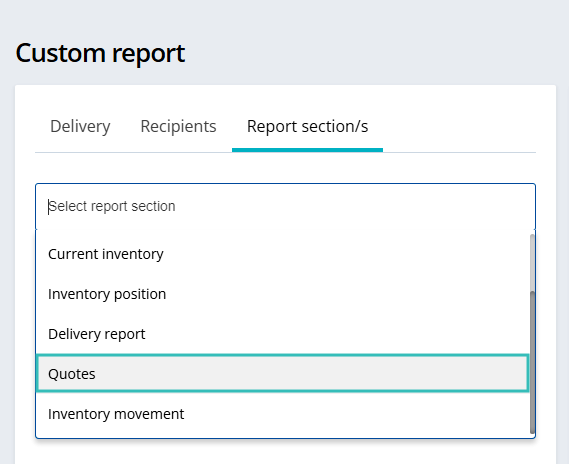</figure></div>


<h2><strong>Quickly Add Unregistered Customer</strong></h2>


<p>(Supported plan/s: All)</p>


<p>Hike lets you email receipts to your customers upon sale completion. If customer details are not entered, you can simply type in an email address to send receipt as an email. Now you can also create a customer profile for this very page. Add a customer name while adding the email address to send a receipt and Hike will associate the customer name with the transaction.</p>


<div class="wp-block-image"><figure class="aligncenter size-full">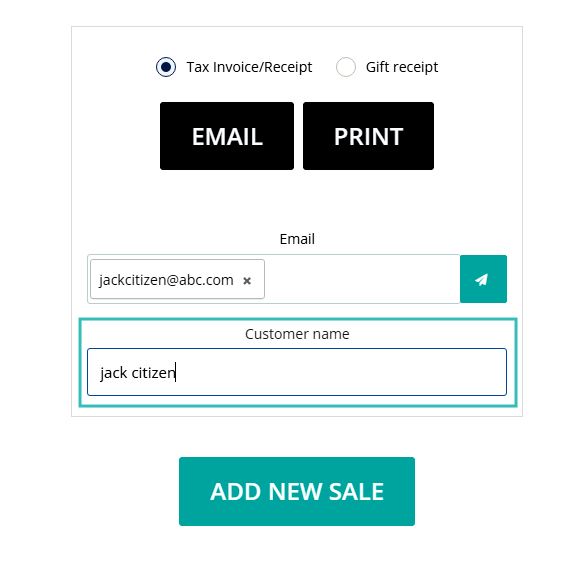</figure></div>


<h2><strong>Print Cash In/Cash Out Receipts</strong></h2>


<p>(Supported plan/s: Hike Plus)</p>


<p>With each cash-in and out, Hike now prints a small docket with time, user name and amount of the cash-in/out transaction. This will help you serve two proposes:</p>


<p>1) You can collect these dockets to verify at end of the day and;</p>


<p>2) With this docket print, your printer attached cash drawer will automatically open upon print</p>


<p>.</p>


<p>You can activate this feature from the <strong>Store Setup &gt; General Rules &gt; Point of Sale&gt;</strong></p>


<p><strong>Prompt to print receipt on Cash IN/OUT</strong> as shown in the screen capture.</p>


<figure class="wp-block-image size-full">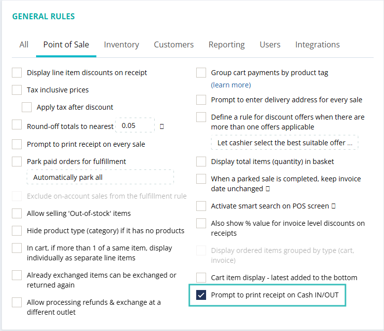</figure>


<h2><strong>Inventory Adjustments Report</strong> <strong>&#8211; Sorting Option</strong></h2>


<p>(Supported plan/s: All)</p>


<p>With this feature update, now you can sort the Inventory adjustment report by more than one column. You can see this in <strong>Reporting &gt; Inventory &gt; Inventory Adjustment. </strong>You can sort for desired output of the report on screen as shown below.</p>


<figure class="wp-block-image size-large">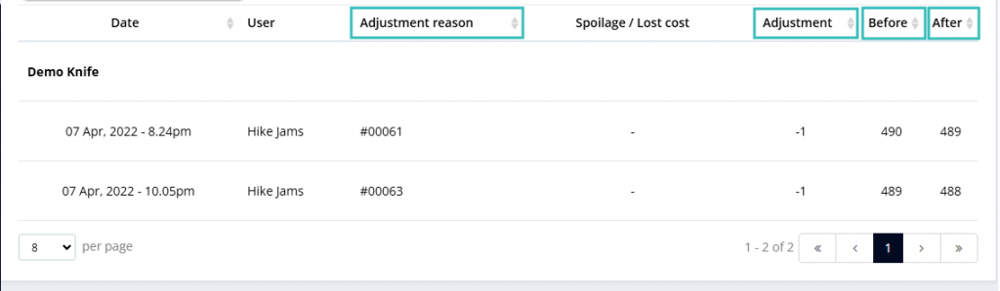</figure>


<h2><strong>Receipt Template &#8211; Display Customer</strong> <strong>Details</strong></h2>


<p>(Supported plan/s: All)</p>


<p>You can now add data field title on receipts for customer name. This is useful if you wish to add something like &#8220;Customer:&#8221; or &#8220;Customer name&#8221; above where customer name appears. You can activate and edit this field text from within receipt templates.</p>


<figure class="wp-block-image size-large"></figure>
<p>The post <a rel="nofollow" href="../../../hike-update-april-2022/index.html">Hike Update: April 2022</a> appeared first on <a rel="nofollow" href="../../../../index.html">Hike POS Software</a>.</p>
]]></content:encoded>
					
		
		
			</item>
		<item>
		<title>Hike Update: January 2022</title>
		<link>https://hikeup.com/blog/hike-update-january-2022/</link>
		
		<dc:creator><![CDATA[Hiren Savjiyani]]></dc:creator>
		<pubDate>Mon, 31 Jan 2022 13:04:07 +0000</pubDate>
				<category><![CDATA[What's new in Hike]]></category>
		<guid isPermaLink="false">https://hikeup.com/?p=55522</guid>

					<description><![CDATA[<p>Hi everyone, Welcome to 2022 and we hope you&#8217;ve had a great start to the year! We are excited to announce our first Feature Update to Hike for 2022, and we have a huge range of features we are releasing as well as bug-fixes to various areas of Hike. Please read ahead to find out&#8230; <a href="../../../hike-update-january-2022/index.html" class="more-link">Read more</a></p>
<p>The post <a rel="nofollow" href="../../../hike-update-january-2022/index.html">Hike Update: January 2022</a> appeared first on <a rel="nofollow" href="../../../../index.html">Hike POS Software</a>.</p>
]]></description>
										<content:encoded><![CDATA[
<p>Hi everyone,</p>


<p>Welcome to 2022 and we hope you&#8217;ve had<span id="more-55522"></span>  a great start to the year!</p>


<p>We are excited to announce our first Feature Update to Hike for 2022, and we have a huge range of features we are releasing as well as bug-fixes to various areas of Hike.</p>


<p>Please read ahead to find out more!</p>


<h2 id="smart-search-in-pos-sales-screen">Smart Search in POS Sales screen</h2>


<p>(Supported plan: Hike Plus)</p>


<p>It is now easier than ever to find products in the POS screen with our new Smart Search feature. This is available to Hike Plus subscriptions, allowing you to select additional sort options such as:</p>


<ul><li>SKU (0-Z)</li><li>Product creation time from the oldest to the newest</li><li>Product creation time from the newest to the oldest</li><li>Product names from 0 to Z</li><li>Product names from Z to 0</li><li>Retail prices from low to high</li><li>Retail prices from high to low</li><li>Stock Availability</li></ul>


<figure class="wp-block-image size-full"></figure>


<figure class="wp-block-image size-large"></figure>


<h2 id="receipt-template-display-updates">Receipt Template Display Updates</h2>


<p>(Supported plan: All)</p>


<p>Hike users have been making full use of the additional Receipt Template editing options such as Font Size choices. Additional feedback has been provided by Hike users and the following updates have been added to Receipt Templates:</p>


<ul><li>&#8216;Sold by&#8217; field is a toggled option so Hike users can now choose if it is displayed or not in the Receipt Template.</li><li>Delivery docket receipt template now shows the Serial Number of Products.</li></ul>


<figure class="wp-block-image size-large"></figure>


<div class="wp-block-image"><figure class="aligncenter size-full"></figure></div>


<h2 id="register-summaries-on-account-sales">Register summaries &#8211; On-Account Sales</h2>


<p>(Supported plan: All)</p>


<p>For Hike Store users who make use of On-Account sales (sales made to customers who have account limits) on the Hike Plus subscription plans, these sales will now be reported in the Register Sales Summary and the Register Closure Reports.</p>


<div class="wp-block-image"><figure class="aligncenter size-full"></figure></div>


<div class="wp-block-image"><figure class="aligncenter size-full"></figure></div>


<h2 id="payment-summaries-from-integration-sales"><strong>Payment Summaries from Integration Sales</strong></h2>


<p>(Supported plan: All)</p>


<p>When a sale is synced from an integration (such as an eCommerce sale or Accounting sales) through to Hike, Hike will now put in the Payment Summary area what the name of the Integration was.</p>


<div class="wp-block-image"><figure class="aligncenter size-large"></figure></div>


<h2 id="hike-reports-additional-reporting-options"><strong>Hike Reports &#8211; Additional Reporting options</strong></h2>


<p>(Supported plan: Hike Plus)</p>


<p>We have added additional Reporting functionality to the Reporting area of the Hike Store.&nbsp;&nbsp;You can now generate Reports which have additional information such as:</p>


<ul><li>Custom Report (Delivery Report) &#8211; lists information such as the Name, Address, Date of Order, Fulfilment status and more.</li><li>Custom Report (Inventory Position Report) &#8211; Shows Quantity sold of a product versus Inventory on hand.</li><li>Store Credit Report &#8211; This report now splits the first name and last name making it easier to sort.</li></ul>


<div class="wp-block-image"><figure class="aligncenter size-full"></figure></div>


<figure class="wp-block-image size-large"></figure>


<figure class="wp-block-image size-large"></figure>


<figure class="wp-block-image size-large"></figure>


<h2 id="advanced-user-permissions-hide-gross-profit"><strong>Advanced User Permissions &#8211; Hide Gross Profit</strong></h2>


<p>(Supported plan: All)</p>


<p>Advanced User Permissions has been very useful for Hike Store owners to manage which areas of the Hike store their users have access to.</p>


<p>We have added an additional option to Hide Gross Profit (useful for owners to assign to cashier/lower level users).</p>


<div class="wp-block-image"><figure class="aligncenter size-full"></figure></div>


<h2 id="display-outlet-register-in-pos-sales-screen"><strong>Display Outlet &amp; Register in POS Sales screen</strong></h2>


<p>(Supported plan: All)</p>


<p>The Outlet and opened Register is now displayed at the top of the POS Sales screen, so that it is clear to users who may be checking multiple registers which register they are currently using and will help avoid confusion and errors.</p>


<figure class="wp-block-image size-full"></figure>


<h2 id="accrual-accounting-support"><strong>Accrual Accounting Support</strong></h2>


<p>(Supported plan: All)</p>


<p>In response to feedback from our Accounting partners, we have now introduced support for the Accrual Accounting method.</p>


<p>This means when an invoice is created in Hike and synced to an Accounting integration, the invoice will retain the invoice creation date regardless of further updates from the payment received date and the invoice closed date.</p>


<div class="wp-block-image"><figure class="aligncenter size-full"></figure></div>


<h2 id="inventory-stocktake-count-importing-an-excel-file"><strong>Inventory Stocktake Count &#8211; Importing an Excel File</strong></h2>


<p>(Supported plan: All)</p>


<p>Hike now allows the option to import pre-created Stocktake Counts that have been created in a spreadsheet, so that the Stocktake Count can be quickly created and will help in scenarios where there are large amounts of products to add to Stocktake Counts.</p>


<div class="wp-block-image"><figure class="aligncenter size-large"></figure></div>


<h2 id="inventory-reports-new-reporting-exports"><strong>Inventory Reports &#8211; New Reporting Exports</strong></h2>


<p>(Supported plan: Hike Plus)</p>


<p>There has been feedback from our users to expand the reports that can be exported out from Hike in the Inventory Reports area.&nbsp; Hike has now added new Report Export options:</p>


<ul><li>Products Awaiting Inventory&nbsp;</li><li>Products which have Committed Stock.</li><li>Inventory Report for all Outlets</li></ul>


<figure class="wp-block-image size-full"></figure>


<h2 id="inventory-stock-transfers-additional-functionality"><strong>Inventory Stock Transfers &#8211; Additional functionality</strong></h2>


<p>(Supported plan: All)</p>


<p>It is now even easier to manage Stock Inventory Transfers between outlets by updating this area to make it more similar to the way Purchase Orders are updated and completed.</p>


<p>You can now update the stock received in the Transfers area easily along with scanning barcodes of products to update received stock as well as closing partially received stock transfers.</p>


<figure class="wp-block-image size-large"></figure>


<h2 id="low-inventory-notification-email-re-order-quantity"><strong>Low Inventory Notification Email &#8211; Re-order Quantity</strong></h2>


<p>(Supported plan: All)</p>


<p>The low inventory notification email that you can set up in your Hike store when inventory drops below a specified quantity will now also display the pre-set Re-order Quantity, making it easier to set up your purchase orders.</p>


<figure class="wp-block-image size-large"></figure>


<h2 id="user-major-activity-log-inventory-movement"><strong>User Major Activity Log &#8211; Inventory Movement</strong></h2>


<p>(Supported plan: Hike Plus)</p>


<p>We have received great feedback from our users regarding our User Reporting Major Activity Log, where owners and managers can easily keep track of major changes occurring in the Hike Store.</p>


<p>Hike now has additional logs for when stock and inventory movements are done in Hike, providing additional visibility and responsibility for users when updating product quantities, creating purchase orders and doing stock transfers.</p>


<figure class="wp-block-image size-large"></figure>


<figure class="wp-block-image size-large"></figure>


<h2 id="default-customer-group"><strong>Default Customer Group</strong></h2>


<p>(Supported plan: All)</p>


<p>A default customer group is now part of Hike Stores where all customers who are created will be assigned to, if no customer group is selected.&nbsp; This will make it easier to sort and find these customers at a later date.</p>


<figure class="wp-block-image size-large"></figure>


<h2 id="bug-fix-ticketing-updates"><strong><strong>Bug-fix: Ticketing Updates</strong></strong></h2>


<p>If you are logged in as a User of a Hike Store and create a ticket, the email address of that user will now be included in the ticket so you can stay informed of the progress of the ticket.</p>


<h2 id="bug-fix-multiple-display-updates-and-text-updates"><strong>Bug-fix: Multiple display updates and text updates</strong></h2>


<p>We have been hard at work squashing sizing and display issues as well as updating spelling errors.&nbsp; We greatly appreciate the continued feedback from our users so please continue to submit anything via your Hike Store&#8217;s Need Help button on the top right.</p>
<p>The post <a rel="nofollow" href="../../../hike-update-january-2022/index.html">Hike Update: January 2022</a> appeared first on <a rel="nofollow" href="../../../../index.html">Hike POS Software</a>.</p>
]]></content:encoded>
					
		
		
			</item>
		<item>
		<title>Hike Update: November 2021</title>
		<link>https://hikeup.com/blog/hike-update-november-2021/</link>
		
		<dc:creator><![CDATA[Hiren Savjiyani]]></dc:creator>
		<pubDate>Thu, 02 Dec 2021 09:17:23 +0000</pubDate>
				<category><![CDATA[What's new in Hike]]></category>
		<guid isPermaLink="false">https://hikeup.com/?p=55066</guid>

					<description><![CDATA[<p>Hi everyone, We have now reached the end of the year and with retail preparing for the busy end of year season, we continue to improve Hike for our users with the November 2021 Feature Release update. We look forward to your continued success into the new year and we will be in contact in&#8230; <a href="../../../hike-update-november-2021/index.html" class="more-link">Read more</a></p>
<p>The post <a rel="nofollow" href="../../../hike-update-november-2021/index.html">Hike Update: November 2021</a> appeared first on <a rel="nofollow" href="../../../../index.html">Hike POS Software</a>.</p>
]]></description>
										<content:encoded><![CDATA[
<p>Hi everyone,</p>


<p>We have now reached the end of<span id="more-55066"></span> the year and with retail preparing for the busy end of year season, we continue to improve Hike for our users with the November 2021 Feature Release update.</p>


<p>We look forward to your continued success into the new year and we will be in contact in 2022 with many additional features to help improve your experience with Hike!</p>


<h2>General Rules tabs</h2>


<p>(Supported plan: All)</p>


<p>As Hike&#8217;s feature set has grown over the years, so has the General Rules area of the Hike Store. It can be difficult to find which General Rule you are looking for from the dozens of options available so we have now sorted them into tabs to make it easier to manage your Hike Store!</p>


<figure class="wp-block-image size-full"></figure>


<h2><strong>Bulk edit multiple products from Product Listing</strong></h2>


<p>(Supported plan: Hike Plus)</p>


<p>We are excited to introduce you to the new Bulk Edit feature for products, which allows you update multiple products directly in your Hike Store via the Product Listing page.</p>


<p>This can save lots of time since you no longer need to manually update products one at a time or export your Product list to a spreadsheet and import the Product list after!</p>


<figure class="wp-block-image size-full"></figure>


<figure class="wp-block-image size-large"></figure>


<h2><strong>My Sales Target Dashboard Information</strong></h2>


<p>(Supported plan: Hike Plus)</p>


<p>If you have set Sales Targets for staff who sell in your Hike Store, those users can now see their sales performance vs. their sales targets with a new tab in the home Dashboard called &#8216;My sales target&#8217;.</p>


<p>This is a quick and easy way for staff to see how they are performing and to motivate them to sell more!</p>


<figure class="wp-block-image size-large"></figure>


<h2><strong>Committed stock detailed information via My Inventory</strong></h2>


<p>(Supported plan: All)</p>


<p>If you have been wondering why your Hike Store has products with Committed Stock but haven&#8217;t been able to locate which sales or stock transfers have committed stock assigned, you can now select the number in the &#8216;Committed&#8217; column of a Product in the My inventory area to find out which sales and/or stock transfers are contributing to committed stock.</p>


<p>Now it will be much easier for you to see and update the sales and stock transfers to make sure committed stock is cleared.</p>


<figure class="wp-block-image size-large"></figure>


<figure class="wp-block-image size-large">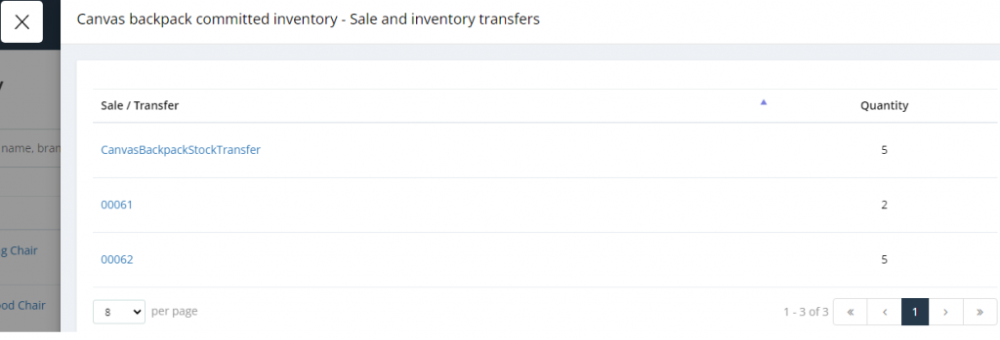</figure>


<h2><strong>Inventory updates via My Inventory</strong></h2>


<p>(Supported plan: Hike Plus)</p>


<p>You can now update your inventory and stock levels without having to create a stocktake or update each product&#8217;s inventory one at a time.</p>


<p><strong>Go to Inventory -&gt; My Inventory</strong> and set the inventory for your list of products using the new Edit Quantity Available field.</p>


<figure class="wp-block-image size-large"></figure>


<h2><strong>Notes field for inventory updates in Product Detail</strong></h2>


<p>(Supported plan: All) </p>


<p>If you are updating inventory from the Product Detail page, tracking why you have made these inventory updates has gotten much easier with the addition of an additional notes field when selecting inventory for that particular product.</p>


<figure class="wp-block-image size-full"></figure>


<h2><strong>Updating multiple products for Purchase Orders</strong></h2>


<p>(Supported plan: All) </p>


<p>When placing large purchase orders from your suppliers, the purchase order may have lots of products and inventory which may split over multiple deliveries. This feature now allows you quickly update multiple products and the inventory received and save the purchase order, without having to update the inventory for every product in the purchase order one at a time.</p>


<figure class="wp-block-image size-large"></figure>


<h2><strong>Quantity when adding a Product to a Purchase Order</strong></h2>


<p>(Supported plan: All) </p>


<p>It is now even easier to create Purchase Orders by having the option to assign the quantity at the same time a product added to a Purchase Order.</p>


<figure class="wp-block-image size-large"></figure>


<h2><strong>Serial Numbers for Paid WooCommerce Sales</strong></h2>


<p>(Supported plan: Hike Plus)</p>


<p>Orders that are synced from Hike&#8217;s WooCommerce integration and have serial number enabled products will now all you to enter the Serial Number information when opening the order in the Sales History of your Hike Store.</p>


<p> </p>


<figure class="wp-block-image size-large"></figure>


<h2><strong>Gift Receipt option at Checkout</strong></h2>


<p>(Supported plan: All)</p>


<p>In order to streamline the process of making sales and printing gift receipts for customers, you can now select the Gift receipt template directly from the Sales Summary checkout area.</p>


<p>Your sales staff no longer need to complete the sale then re-open the sales invoice in the Sales History in order to print gift receipts, saving valuable time especially during the busy end of season period!</p>


<figure class="wp-block-image size-full"></figure>


<h2><strong>Multiple email address options</strong></h2>


<p>(Supported plan: Hike Plus)  </p>


<p>We have had feedback from Hike users to allow emailing sales invoice receipts to multiple email addresses. You can now enter multiple emails once the sale is complete and ready to be emailed or add multiple emails when opening previous sales in the Sales history and selecting the Email button.</p>


<figure class="wp-block-image size-full"></figure>


<figure class="wp-block-image size-large"></figure>
<p>The post <a rel="nofollow" href="../../../hike-update-november-2021/index.html">Hike Update: November 2021</a> appeared first on <a rel="nofollow" href="../../../../index.html">Hike POS Software</a>.</p>
]]></content:encoded>
					
		
		
			</item>
		<item>
		<title>Hike Update: September 2021</title>
		<link>https://hikeup.com/blog/hike-update-september-2021/</link>
		
		<dc:creator><![CDATA[Hiren Savjiyani]]></dc:creator>
		<pubDate>Thu, 21 Oct 2021 05:51:50 +0000</pubDate>
				<category><![CDATA[What's new in Hike]]></category>
		<guid isPermaLink="false">http://hikeup.com/?p=54704</guid>

					<description><![CDATA[<p>Hi everyone, As we head towards to end of the year we continue to work hard on improving Hike. One of our most requested features &#8211; Customer Display Screen, is now available and there is a lot more we have added, so read more about our new features for September below! On Account sales receipt&#8230; <a href="../../../hike-update-september-2021/index.html" class="more-link">Read more</a></p>
<p>The post <a rel="nofollow" href="../../../hike-update-september-2021/index.html">Hike Update: September 2021</a> appeared first on <a rel="nofollow" href="../../../../index.html">Hike POS Software</a>.</p>
]]></description>
										<content:encoded><![CDATA[
<p>Hi everyone,</p>


<p>As we head towards to end of<span id="more-54704"></span> the year we continue to work hard on improving Hike. One of our most requested features &#8211; Customer Display Screen, is now available and there is a lot more we have added, so read more about our new features for September below!</p>


<h2><strong>On Account sales receipt template</strong></h2>


<p>(Supported plan: Hike Plus) </p>


<p>Hike has now added a dedicated receipt template for&nbsp;<a href="https://help.hikeup.com/portal/en/kb/articles/performing-sales-in-hike#How_to_Place_a_Hike_Sale_On-Account" target="_blank" rel="noreferrer noopener">‘On account’ sales</a>. You can check it out in the Store Setup &gt; Receipt Template area and customise the template to suit your needs.</p>


<p>This is very useful for printing specific sale related terms and conditions on receipts.</p>


<figure class="wp-block-image size-full"></figure>


<h2><strong>Additional Customer/Tax ID option for customers</strong></h2>


<p>(Supported plan: Hike Plus)</p>


<p>We’ve added a new data field ‘Customer/Tax ID’ for customer profiles. It helps you capture, highlight and display a customer’s legal ID where required. This allows you assign a Tax Number or a custom membership/registration number and then have this information printed out in your Receipt Template if required.</p>


<p>This is especially useful in countries where there are tax regulations requiring the display of a specific tax identification number in order to claim taxes back but it can also be used for a wide variety of purposes.</p>


<figure class="wp-block-image size-large"></figure>


<h2><strong>Purchase orders &#8211; Importing products via Barcode number</strong></h2>


<p>(Supported plans: All) </p>


<p>Purchase orders in Hike have become easier to manage, with the addition of being able to import products into your purchase orders by using Barcode numbers. This makes it even easier to update your purchase orders if your suppliers use Barcode numbers to keep track of the products being sent.</p>


<h2><strong>Additional rounding options</strong></h2>


<p>(Supported plans: All)  </p>


<p>Additional rounding off options for sales orders are now available to all Hike users. With Hike’s existing userbase in 40+ countries (and growing), this helps us provide a better rounding solution to all our customers including for those currencies which don&#8217;t use decimals. Now you can use an option to round totals off to its nearest whole number if required.</p>


<figure class="wp-block-image size-full"></figure>


<h2><strong>Multiple email addresses per customer</strong></h2>


<p>(Supported plan: Hike Plus)   </p>


<p>We understand how hard it is to manage customer contact emails (especially if it is a business with multiple contacts) so we have expanded the customer information fields to allow for up to 3 email addresses to be assigned for each customer.</p>


<figure class="wp-block-image size-full"></figure>


<h2><strong>Remove un-used Outlets &amp; Registers</strong></h2>


<p>(Supported plans: All)    </p>


<p>We’ve made it easier to manage the &#8216;Outlets and Registers&#8217; added to your Hike store when you are converting from a trial to a paid subscription or if you are making changes to your business. You now have the option to remove any outlet or register from your Hike Store and update them as required.</p>


<h2><strong>Logo size options in Receipts</strong></h2>


<p>(Supported plans: All)  </p>


<p>There is now more flexibility in selecting the size of your logo that is displayed on your Hike receipts.&nbsp; Simply go to your receipt template and select the Font Size settings and you will be able to adjust size of your logo too.</p>


<figure class="wp-block-image size-full">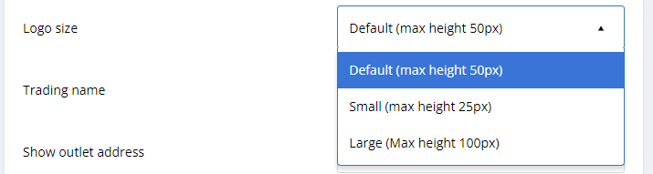</figure>


<h2><strong>Parked paid orders can now have a fulfilment status</strong></h2>


<p>(Supported plans: All)   </p>


<p>The functionality of Hike&#8217;s parked orders which have already been paid has been expanded to allow for a fulfilment status to be assigned to them.&nbsp; This is especially useful for cases where you may have received an order and payment but you need to fulfil and send the order at a later date.&nbsp; You can select the &#8216;Prompt for confirmation (fulfilled or not)&#8217; option in the Store Setup &gt; General &gt; General Rules.</p>


<figure class="wp-block-image size-full"></figure>


<h2><strong><strong>Tip/Surcharge calculated including tax</strong></strong></h2>


<p>(Supported plans: All)  </p>


<p>Additional flexibility has been added to the tips/surcharge feature to now allow your Hike Store to work out the amounts based on the tax inclusive sale total of the Sales Order.&nbsp; You can find this option in the Store Setup &gt; General &gt; Activate or remove features area.</p>


<figure class="wp-block-image size-full"></figure>


<h2><strong><strong>Purchase Order retail pricing display options</strong></strong></h2>


<p>(Supported plans: All) </p>


<p>You now have multiple options for the display of the retail pricing in your Purchase Orders.&nbsp; You can now choose whether to display the retail pricing in printed or emailed purchase orders or not at all.</p>


<figure class="wp-block-image size-full"></figure>


<h2><strong><strong>Exporting store credit information</strong></strong></h2>


<p>(Supported plan: Hike Plus) </p>


<p>Exporting information on customers who have Store Credit assigned your Hike Store is now possible, allowing you to store this information in a spreadsheet or PDF file for future reference.&nbsp; Simply go to Reporting &gt; Customers &gt; Store Credit then export all the Store Credit information, or select an individual customer to find out and export their Store Credit information.</p>


<figure class="wp-block-image size-full"></figure>


<h2><strong><strong>New printer support (iPad): Star Micronics mC-Print3</strong></strong></h2>


<p>(Supported plans: All)  </p>


<figure class="wp-block-image size-full"></figure>


<p>The Hike Register app for iPad now supports the Star Micronics mC-Print3 thermal printer. The newest addition to Star Micronic&#8217;s thermal printer family, the mC-Print3 is 40% smaller than its predecessor TSP650, and supports more features, such as SteadyLAN that enables your iPad to connect to the internet via the printer, instead of WiFi. If you want to learn more about this model and its features, please refer to its&nbsp;<a href="https://marketing.starmicronics.com/acton/attachment/34776/f-7f560784-aa52-4fbd-8da9-7844d0177ead/1/-/-/-/-/mC-print3_spec-sheet-07-08-2020-Digital.pdf" rel="noreferrer noopener" target="_blank">two-page data sheet</a>.&nbsp;</p>


<p>Hike Register app on iPads now connects to this printer using Bluetooth or LAN. For the detailed setup instructions, please refer to the support article&nbsp;<a href="https://help.hikeup.com/portal/en/kb/articles/setting-up-your-star-micronics-mc-print3-with-hike-on-ipad" rel="noreferrer noopener" target="_blank">here</a>.&nbsp;</p>


<p>If you are interested in buying the printer, please contact our&nbsp;<a href="mailto:hello@hikeup.com?subject=">sales team</a>.</p>


<h2><strong><strong>New Avery label sheet support: Avery 4 x 8</strong></strong></h2>


<p>(Supported plans: All)   </p>


<p>To make Avery label printing more accessible to global customers, we’ve added support to a new Avery label sheet. The label size is 1-1/4&#8243; x 1-3/4&#8243;, and you can print 32 labels on each sheet. Here’s the&nbsp;<a href="https://www.avery.com/templates/6570" rel="noreferrer noopener" target="_blank">official template</a>&nbsp;provided by Avery for this type of sheets.</p>


<p>Please note, though the new sheet support is available to customers of all subscription plans, the skip count feature is available to plus, one-store, and multi-store customers only.</p>


<p></p>
<p>The post <a rel="nofollow" href="../../../hike-update-september-2021/index.html">Hike Update: September 2021</a> appeared first on <a rel="nofollow" href="../../../../index.html">Hike POS Software</a>.</p>
]]></content:encoded>
					
		
		
			</item>
		<item>
		<title>Introducing Customer Facing Display</title>
		<link>https://hikeup.com/blog/introducing-customer-facing-display/</link>
		
		<dc:creator><![CDATA[Hiren Savjiyani]]></dc:creator>
		<pubDate>Tue, 19 Oct 2021 09:51:30 +0000</pubDate>
				<category><![CDATA[What's new in Hike]]></category>
		<guid isPermaLink="false">http://hikeup.com/?p=54610</guid>

					<description><![CDATA[<p>We are thrilled that Hike is one of the first cloud POS solutions to introduce the Customer Facing Display screen across multiple platforms &#8211; including PC and Mac. Whether you use Hike in a web browser or via our iPad app, you can activate customer facing display screens for all your registers in a few&#8230; <a href="../../../introducing-customer-facing-display/index.html" class="more-link">Read more</a></p>
<p>The post <a rel="nofollow" href="../../../introducing-customer-facing-display/index.html">Introducing Customer Facing Display</a> appeared first on <a rel="nofollow" href="../../../../index.html">Hike POS Software</a>.</p>
]]></description>
										<content:encoded><![CDATA[
<p>We are thrilled that Hike is one<span id="more-54610"></span> of the first cloud POS solutions to introduce the Customer Facing Display screen across multiple platforms &#8211; including PC and Mac.</p>


<p>Whether you use Hike in a web browser or via our iPad app, you can activate customer facing display screens for all your registers in a few simple steps.</p>


<p>Read below to find out more about this exciting feature!</p>


<h2><strong>Customer Facing Display</strong></h2>


<p>(Supported plan: Hike Plus)</p>


<p>One of the most requested features in Hike has been the ability to have an additional customer facing display for information. We are pleased to introduce a secondary display option for Hike stores which can be used to show useful information to customers.</p>


<p>The Customer Display uses your shared Internet Connection and a pairing code and is available for display via a Web Browser (PC/MAC display) or an iPad using the&nbsp;<a href="https://apps.apple.com/us/app/customer-display-for-hike-pos/id1578866942" rel="noreferrer noopener" target="_blank">Customer Display for Hike POS</a>&nbsp;iPad app.</p>


<figure class="wp-block-image size-large"></figure>


<p>This second display can be used to display items that have been added to a customer’s cart as well as displaying products/advertisements/marketing information. You can provide input options so that customers can provide their email address for sending receipts as well as update their name/contact number information for future reference.</p>


<p>Key features</p>


<ol><li>Helps you keep customer details up to date</li><li>Streamlined way of getting more customers to sign up</li><li>Run marketing campaign slides at check-out</li><li>Real-time sales display of all line items, discounts, loyalty points and sales tax</li></ol>


<p>To find out about how to get the Customer Display set up in your Hike Store, please follow the instructions listed in our&nbsp;<a href="https://help.hikeup.com/portal/en/kb/articles/configure-customer-display" rel="noreferrer noopener" target="_blank">Configure Customer Display support article</a>.</p>


<figure class="wp-block-image size-large"></figure>


<p>We look forward to expanding on the Customer Display functionality and we welcome any feedback or suggestions you may have!</p>
<p>The post <a rel="nofollow" href="../../../introducing-customer-facing-display/index.html">Introducing Customer Facing Display</a> appeared first on <a rel="nofollow" href="../../../../index.html">Hike POS Software</a>.</p>
]]></content:encoded>
					
		
		
			</item>
		<item>
		<title>Hike Update: August 2021</title>
		<link>https://hikeup.com/blog/hike-update-august-2021/</link>
		
		<dc:creator><![CDATA[Hiren Savjiyani]]></dc:creator>
		<pubDate>Wed, 22 Sep 2021 09:14:00 +0000</pubDate>
				<category><![CDATA[What's new in Hike]]></category>
		<guid isPermaLink="false">http://hikeup.com/?p=54143</guid>

					<description><![CDATA[<p>Hi everyone, We are always looking at ways to make our platform easier to use. Please read further to find out more about the features we have recently introduced.&#160; We continue to add features as we reach the end of the first quarter of the financial year and we look forward to providing you with&#8230; <a href="../../../hike-update-august-2021/index.html" class="more-link">Read more</a></p>
<p>The post <a rel="nofollow" href="../../../hike-update-august-2021/index.html">Hike Update: August 2021</a> appeared first on <a rel="nofollow" href="../../../../index.html">Hike POS Software</a>.</p>
]]></description>
										<content:encoded><![CDATA[
<p>Hi everyone,</p>


<p>We are always looking at<span id="more-54143"></span> ways to make our platform easier to use. Please read further to find out more about the features we have recently introduced.&nbsp; We continue to add features as we reach the end of the first quarter of the financial year and we look forward to providing you with the best experience possible!</p>


<h2><strong>Improved inventory loading times in POS screen</strong></h2>


<p>(Supported plans: All)</p>


<p>Loading products (especially for stores with large inventory) can be a time consuming task initially. We have optimised the Point of Sale screen to load products up to 10 times quicker.</p>


<figure class="wp-block-image size-large"></figure>


<p>Even with tens of thousands or even hundreds of thousand of products, you should be up and running in under 30 seconds!</p>


<h2><strong>Automatically generate 13-digit barcodes for products</strong></h2>


<p>(Supported plans: All) </p>


<p>In order to generate barcodes that comply with numerical-only standards, we&#8217;ve updated Hike&#8217;s automatic barcode generation to provide the option to generate barcodes with only numbers.</p>


<figure class="wp-block-image size-large"></figure>


<h2><strong>Show total quantity of products in a sale</strong></h2>


<p>(Supported plans: All) </p>


<p>A regularly requested feature is the ability to display the total amount of items in the Process Sale screen.&nbsp; This feature is now an option which can be enabled in your Hike Store&#8217;s Store Setup -&gt; General area.</p>


<figure class="wp-block-image size-full"></figure>


<h2><strong>New eCommerce Integration &#8211; Ecwid</strong></h2>


<p>(Supported plans: Multi-store and Plus)   </p>


<p>We are always looking to increase the options for Hike users to integrate with their eCommerce platform of choice.&nbsp; Our latest integration is with Ecwid.&nbsp; You can now sync products, sales and customers between Hike and Ecwid for a seamless in-store and online sales experience.</p>


<figure class="wp-block-image size-full"></figure>


<h2><strong>Customised Store Themes</strong></h2>


<p>(Supported plans: All) </p>


<p>Choose from different themes in your Store Setup General Locale Settings to customise the header and sidebar colours of your Hike Store.</p>


<figure class="wp-block-image size-large"></figure>


<h2><strong>Thai language Support</strong></h2>


<p>(Supported plans: All) </p>


<p>Thai language support is the latest language we&#8217;ve added to Hike.</p>


<figure class="wp-block-image size-full"></figure>


<h2><strong>Advanced Product Filters</strong></h2>


<p>(Supported plans: Multi-store and Plus)  </p>


<p>You can now sort your Products list in Hike with advanced filters, allowing you to sort by fields such as Product Type, Inventory, Status, Sales Channels, Sales Volume and Sync Status.</p>


<p>You can also save the Advanced Searches choices for easy access in the future!</p>


<figure class="wp-block-image size-large"></figure>


<h2><strong>Sales History Source</strong></h2>


<p>(Supported plans: All) </p>


<p>The Sales History page now reports the source from where Sales were submitted from.&nbsp; This will make it easier for Hike Store users to check where the sale was made from, whether it is via Cloud (web browser), iOS (tablet app) or synced from integrations (eCommerce/Accounting).</p>


<figure class="wp-block-image size-full"></figure>


<h2><strong>Multi-Discount Logic Choice</strong></h2>


<p>(Supported plans: All) </p>


<p>If you have multiple discount offers available, you now have the ability to customise which discount offer will apply.&nbsp; You can choose to automatically apply the highest or lowest discount, or to have the user manually select from the list.&nbsp; This can be enabled in your Hike Store&#8217;s &#8216;Store setup -&gt; General&#8217; area.</p>


<figure class="wp-block-image size-full"></figure>


<h2><strong><strong>Inventory Transfers between Outlets &#8211; In Transit</strong></strong></h2>


<p>(Supported plans: Multi-store and Plus)  </p>


<p>It is now easier than every to track inventory that is transferred between Hike Outlets, thanks to a new status that marks the Inventory Transfer as &#8216;In transit&#8217;.&nbsp; Your stock can now accurately be tracked from destination A to B.</p>


<figure class="wp-block-image size-large"></figure>


<h2><strong>Additional Hike features and fixes</strong></h2>


<ul><li>Shipping fees reported on Cash Register page and Register summaries.</li><li>Users can change PIN without needing to go to the Users page.</li><li>Option to email gift card details if gift card receiver email is entered.</li><li>Warning for syncing cost prices between Hike and Shopify.</li><li>Selling products lower than cost price option moved to User Permissions area to allow this to be applied to custom user roles.</li><li>Manual sync page displays option to select multiple integration syncs.</li></ul>


<p></p>
<p>The post <a rel="nofollow" href="../../../hike-update-august-2021/index.html">Hike Update: August 2021</a> appeared first on <a rel="nofollow" href="../../../../index.html">Hike POS Software</a>.</p>
]]></content:encoded>
					
		
		
			</item>
		<item>
		<title>Hike Update: June 2021</title>
		<link>https://hikeup.com/blog/hike-update-june-2021/</link>
		
		<dc:creator><![CDATA[Hiren Savjiyani]]></dc:creator>
		<pubDate>Fri, 16 Jul 2021 10:21:00 +0000</pubDate>
				<category><![CDATA[What's new in Hike]]></category>
		<guid isPermaLink="false">http://hikeup.com/?p=53604</guid>

					<description><![CDATA[<p>Hi, everyone, Hike has already released more features than whole of last calendar year. June is no different. I come bearing many new features and improvements: Improved delivery address (Supported plans: One store, Multi-store and Plus) Call it delivery address plus if you will. You are using  delivery addresses in your Hike store for a&#8230; <a href="../../../hike-update-june-2021/index.html" class="more-link">Read more</a></p>
<p>The post <a rel="nofollow" href="../../../hike-update-june-2021/index.html">Hike Update: June 2021</a> appeared first on <a rel="nofollow" href="../../../../index.html">Hike POS Software</a>.</p>
]]></description>
										<content:encoded><![CDATA[
<p>Hi, everyone, Hike has already released<span id="more-53604"></span> more features than whole of last calendar year. June is no different. I come bearing many new features and improvements:</p>


<h2>Improved delivery address</h2>


<p>(Supported plans: One store, Multi-store and Plus)</p>


<p>Call it delivery address plus if you will. You are using  <a href="https://help.hikeup.com/portal/en/kb/articles/how-to-manage-delivery-addresses-of-a-customer" target="_blank" rel="noreferrer noopener">delivery addresses</a> in your Hike store for a while now. With this update, you’ll be able to provide receiver name, company details and phone number along with the delivery address. This way, if the buyer and recipient are different, things can be managed without a hitch.</p>


<figure class="wp-block-image size-large"></figure>


<p>Just a reminder…. Hike also supports shipping fees as of previous update which goes hand in hand with the delivery updates. The improved delivery addresses and shipping fee options are introduced in line with the requirement based on current global situation.</p>


<p>It’s also worth mentioning that the feature is fully supported in the Hike app on iPads. If you are using Hike mainly with an iPad, you can also enjoy the convenience of managing delivery addresses for your in-store sales.</p>


<h2>Compare reporting periods</h2>


<p>(Supported plans: One store, Multi-store and Plus)</p>


<p>“How well are we performing compared with last year?” This question can now be answered easily. In the past, you would need an excel expert to pull up a few reports and do some magic to get the answer. Hike strives to constantly improve, and we are pleased to present another improvement that would help you save time and gain better insights.</p>


<figure class="wp-block-image size-large"></figure>


<p>The feature can be found in Reporting &gt; Detailed analytics. You will need to first get the report by choosing report type, measure and report period. You may also consider using the advanced filters to customise your report. Now, here comes the magic part. Pick a comparison type, and you will know what the performance is like, compared to the same days/periods of last year.</p>


<p>Also, in case you haven’t explored it, the sales summary report in Reporting &gt; Sales offers you a simple comparison of sales data in a different dimension. For example, if your sales report is for yesterday, the change in percentage is to give you an idea of how it was, compared with the day before yesterday.</p>


<figure class="wp-block-image size-large"></figure>


<h2>A more flexible and intuitive loyalty program</h2>


<p>(Supported plans: One store, Multi-store and Plus)</p>


<p>Loyalty = points and 100 points = $1. That’s so yesterday. Hike now lets you customise the $ to point equation so that 100 points could be anything you like; $2, $0.50 or equal to a banana. Your choice.</p>


<p>You will be able to customise the rewarding ratio as always but can now also change the redemption ratio of loyalty points.</p>


<figure class="wp-block-image size-large">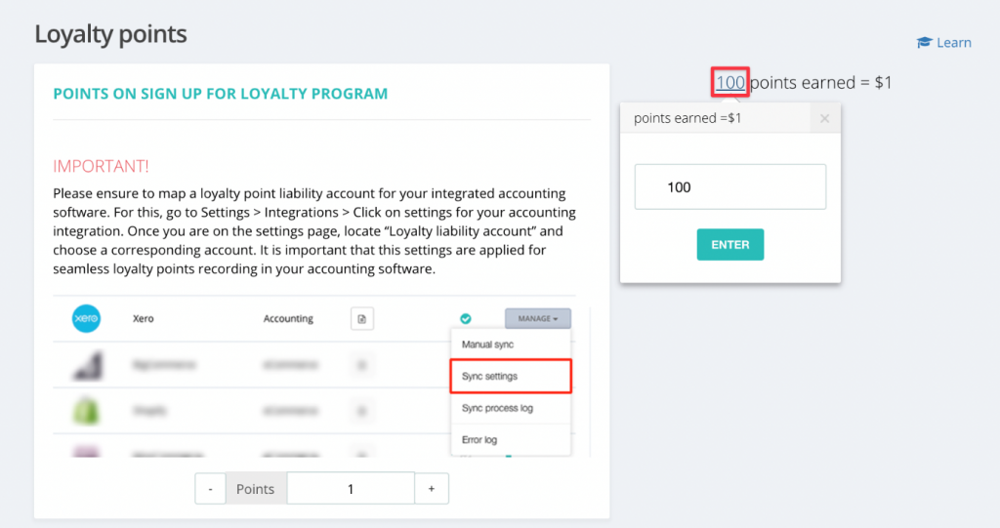</figure>


<p>Click on the value on the right of the loyalty points page, and you can change it to a number that works best for your business.</p>


<p>Please note: its easy to change the points to dollar equation, however, it will change the monetary value of a customer’s existing loyalty points balance.</p>


<div class="wp-block-image"><figure class="aligncenter size-full">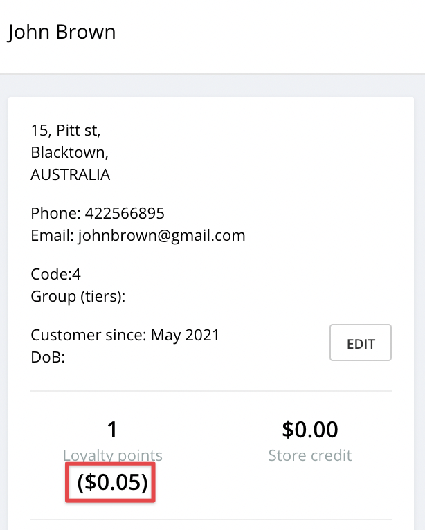</figure></div>


<p>What can I buy with my 100,000 loyalty points?</p>


<p>Now that your loyalty points are no longer 100 points = $1, it’s not as easy as moving the decimal points to the left to know the $ value. Keeping that in mind, our team has improved the point balance display so that it now also shows its monitory value. will be able to see how much the points are worth, when&nbsp; you check the balance.</p>


<h2>Windcave – New integrated payment for AU and NZ merchants</h2>


<p>Supported plans: all</p>


<p>If you are using Hike with a non-integrated payment type because your bank is not yet supported, here are some good news for you! Windcave connects with almost all major banks in Australia and New Zealand, while the support in other regions, e.g. United States and Canada, is on its way.</p>


<div class="wp-block-image"><figure class="aligncenter size-full">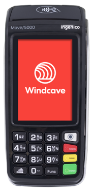</figure></div>


<p>If you’re interested in finding out more about Windcave + Hike, please <a href="../../../../contact/index.html" target="_blank" rel="noreferrer noopener">contact our sales team</a>, they’d love to help you out.</p>


<h2>Sales target reports</h2>


<p>Supported plans: one store, multi-store, plus, enterprise</p>


<p>No goals, no motivation. You may not agree with this statement, but what if that’s true for your staff? Setting a sales target and reporting on accomplished percentage may work as a great motivation for your staff and a perfect management tool for yourself.</p>


<p>To do it in Hike, you will need to set the targets for a user on Users &gt; Users. Then, simply check the daily/weekly/monthly sales target reports on Reporting &gt; Users &gt; Sales targets.</p>


<figure class="wp-block-image size-large"></figure>


<p>Oh, poor Tassia, you might need to work a bit harder to make up for that 34% tomorrow.</p>


<h2>Support to Linkly-powered payments on iPads &#8211; AU</h2>


<p>Supported plans: all</p>


<p>Linkly, also known as PC-EFTPOS, is empowering the EFTPOS machines of quite a few banks to be connected with Hike, including NAB (National Australia Bank). We <a href="../../../hike-update-january-2021/index.html" target="_blank" rel="noreferrer noopener">introduced</a> the Linkly-powered payment types this January, while the support has been added in our POS app on iPads as well.</p>


<p>To get the detailed knowledge of how it works with Hike, please refer to the support article <a href="https://help.hikeup.com/portal/en/kb/articles/how-to-configure-hike-with-payment-types-powered-by-linkly" target="_blank" rel="noreferrer noopener">here</a>. If you are interested, you are welcomed to call our sales team to discuss it further.</p>


<h2>Optimisation on sales and purchases scenarios</h2>


<p>Supported plans: all</p>


<p>With the growth of Hike and our customers, we’ve been considering how Hike can fulfill more retail scenarios and fit our customers’ businesses even better. In June, we implemented much optimisation on sales and purchases to extend the business scenarios we support, which we hope can make Hike work better for your business.</p>


<ul><li>Print product barcodes on sales receipts printed from printers connected with iPads. It’s helpful when product barcodes make more sense as product identifiers/locators to your customers.</li><li>Use comma as the decimal separator on iPads, provided based on the region in which your stores are located.</li><li>Which discount to apply when multiple discounts can be applied. You can choose whether to apply the highest/lowest discount automatically or let the cashier to make the on-spot decision.</li><li>Print additional information on receipts. You can now enable the printing of a product’s custom field on receipts from receipt templates. The custom field is often used by our customers to record the bin-location reference or some additional information requested by local regulations. Thus, you can use it for better inventory management or compliance purposes.</li></ul>


<figure class="wp-block-image size-full"></figure>


<h2>Multi-currency support for Hike Subscription</h2>


<p>To save you the cost for currency exchange, we’ve added the support of more currencies in Hike subscriptions. If your store is in any of the following region, you will be able to pay for your Hike subscription in your local currencies.</p>


<ul><li>Australia</li><li>USA</li><li>Canada</li><li>United Kingdom</li><li>South Africa</li><li>Singapore</li><li>India</li></ul>


<h2>Upcoming features</h2>


<ul><li>Fast loading of inventory on POS screen</li><li>Automatically generate 13-digit barcodes for products</li><li>Show the total quantity of products in a sale</li></ul>


<p>Thank you for reading through the article. We’re so thrilled to bring all these updates and sincerely hope that our efforts could help you improve productivity and reduce costs in these trying times.</p>
<p>The post <a rel="nofollow" href="../../../hike-update-june-2021/index.html">Hike Update: June 2021</a> appeared first on <a rel="nofollow" href="../../../../index.html">Hike POS Software</a>.</p>
]]></content:encoded>
					
		
		
			</item>
		<item>
		<title>May 2021 Newsletter</title>
		<link>https://hikeup.com/blog/may-2021-newsletter/</link>
		
		<dc:creator><![CDATA[Hiren Savjiyani]]></dc:creator>
		<pubDate>Tue, 15 Jun 2021 10:50:00 +0000</pubDate>
				<category><![CDATA[What's new in Hike]]></category>
		<guid isPermaLink="false">http://hikeup.com/?p=53745</guid>

					<description><![CDATA[<p>Hello there, here we’re again brining you our best Hike point of sale ever. The theme of this update is ‘simplify and secure’. Here is the list without further ado: Add new product from within the purchase orders Supported plans: all Got a new product delivery from supplier, so excited. When into Hike to add&#8230; <a href="../../../may-2021-newsletter/index.html" class="more-link">Read more</a></p>
<p>The post <a rel="nofollow" href="../../../may-2021-newsletter/index.html">May 2021 Newsletter</a> appeared first on <a rel="nofollow" href="../../../../index.html">Hike POS Software</a>.</p>
]]></description>
										<content:encoded><![CDATA[
<p>Hello there, here we’re again brining you our best Hike <span id="more-53745"></span>point of sale ever. The theme of this update is ‘simplify and secure’. Here is the list without further ado:</p>


<h2>Add new product from within the purchase orders</h2>


<p>Supported plans: all</p>


<p>Got a new product delivery from supplier, so excited. When into Hike to add the product and realised it’s a new product so have to go back, create a product first and then come back to the purchase order to mark these new items as received.</p>


<p>How many steps do I need to add new products in Hike as per my supplier’s invoice?</p>


<p>Well, the answer is ‘only one’ – after this update. You can use the import function in the purchase order to create new products now.</p>


<div class="wp-block-image"><figure class="aligncenter size-full"></figure></div>


<p>After importing products into a purchase order, you will get the option to create the new products in the import log on the purchase order page, if the items in the file can’t be found in the current inventory of your store.</p>


<p>However, this is not the only way to add new products from a purchase order. With the help of a scanner, you can also achieve the same. Simply scan a new barcode, and you will be directed to the page to create a simple product with some basic information. The product is then added into the purchase order automatically. If you want to explore more on how a scanner can be used for purchases, please read <a href="https://help.hikeup.com/portal/en/kb/articles/use-a-barcode-scanner-for-purchase-orders" target="_blank" rel="noreferrer noopener">Use A Barcode Scanner for Purchase Orders</a>.</p>


<h2>A blind stocktake</h2>


<p>Supported plans: one store, multi-store Due to security reasons and aiming at a more accurate stock count, you might want your staff to perform a stocktake without knowing the expected count &#8211; how many are recorded in the system. You can achieve this in Hike by customising user permissions.</p>


<div class="wp-block-image"><figure class="aligncenter size-large"></figure></div>


<p>Without the permission “view expected quantity”, users will not be able to see the current stock level in a stocktake while they perform it.</p>


<p>If you are not so familiar with the stocktake feature in Hike and would like to explore it further, here’s a <a href="https://help.hikeup.com/portal/en/kb/articles/creating-completing-inventory-counts-in-hike" target="_blank" rel="noreferrer noopener">support article</a> on how to do the count in Hike. If you have any questions about it, our chat support team is just one click away.</p>


<h2>Top up a gift card and void it</h2>


<p>Supported plans: one store, multi-store</p>


<p>Well, we don’t mean to ask you to top it up and void at the same time – but now you could if you want. It’s really a pity if a beautifully designed gift card ends up in bins after it’s fully redeemed, isn’t it? Let’s not even discuss the environmental cost. To improve on this and make gift cards reusable, Hike now supports recharging a gift card.</p>


<p>The recharging process is similar to selling a new gift card. If you have entered an old gift card number when selling it, you will get the balance on the page and can top it up from there.</p>


<div class="wp-block-image"><figure class="aligncenter size-large">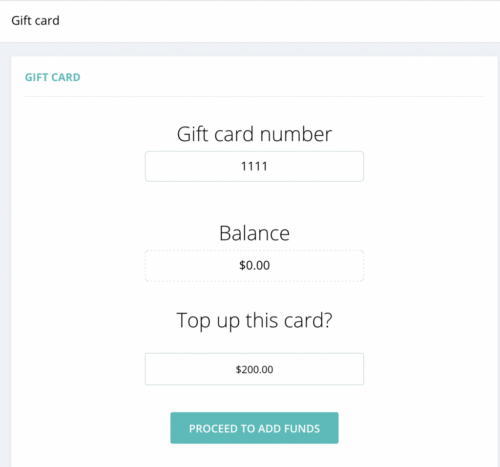</figure></div>


<p>Besides, Hike has also added the support to voiding a gift card. In case a gift card is sold wrongly by mistake, you can void it by voiding the gift card sale, just to avoid your report being messed up.</p>


<h2>More versatile reports</h2>


<p>Supported plans: please refer to the feature list</p>


<p>Reports are never as important as they are now. Though you can always have an Excel expert to do it for you, a simple and intuitive report means cost saving and a better management of your business. We’ve released some updates to the reporting section, major or minor, just to make your life easier.</p>


<ul><li>Reporting &gt; Register &gt; Float in/out. The report is designed to pull up all the cash in and out activities in the chosen time period. You don’t need to bother checking each shift report to get the data. (supported plans: all)</li><li>Reporting &gt; Register &gt; Shift report &gt; Transaction by SKU. Line-item notes and invoice notes have been added to the report, which hopefully can provide a better context when checking the numbers. (supported plans: one store, multi-store)</li><li>Reporting &gt; Users. We still keep the timecard report for deleted users. Even if you have deleted the user of a casual worker, you can still calculate his pay with the report. (supported plans: one store, multi-store)</li></ul>


<div class="wp-block-image"><figure class="aligncenter size-large">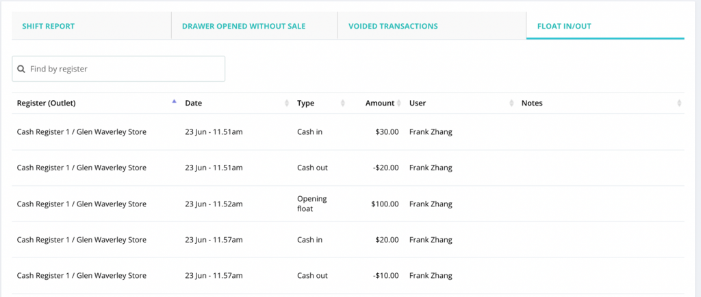</figure></div>


<h2>Quotes and unit of measure available to iPad users</h2>


<p>Supported plans: please refer to the feature list</p>


<p>We’ve got many positive feedbacks on the features we’ve released recently. Thank you all for that. It’s really a great encouragement to us and helps our product team make up our mind to provide these features in our iOS app as well. The following new features have been added to our POS app on iPad.</p>


<ul><li>Issue a quote (supported plans: one store, multi-store)</li><li>Unit of measure (supported plans: one store, multi-store)</li><li>Add shipping fees to an in-store sale (supported plans: all)</li><li>A new gender option: prefer not to say (supported plans: all)</li></ul>


<div class="wp-block-image"><figure class="aligncenter size-large"></figure></div>


<h2>Exchange a sale for a different customer</h2>


<p>Supported plans: one store, multi-store</p>


<p>While 90% of the exchange is done with the buyer, the other 10% is done with the gift receiver. We certainly don’t want to leave you with no option when serving those 10% of cases. Now, when processing an exchange in your store, you are able to change the customer on the process sale screen by removing the old one and adding the new.</p>


<div class="wp-block-image"><figure class="aligncenter size-large"></figure></div>


<h2>Add notes in purchase returns</h2>


<p>Supported plans: one store, multi-store</p>


<p>When you return a purchase order, your supplier might ask you 2 questions.</p>


<ul><li>What’s the original purchase order number?</li><li>Why do you want to return it/them?</li></ul>


<p>You may also want to record the answers yourself, for your own auditing purposes. To do that, please simply add the notes when you initiate the purchase order return. Also, in case you don’t know, the original purchase order number will be added automatically by the system after you complete the return.</p>


<div class="wp-block-image"><figure class="aligncenter size-large">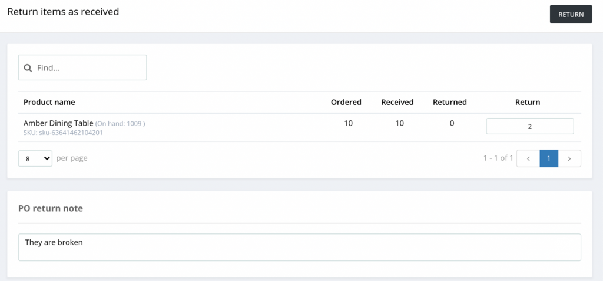</figure></div>


<h2>Upcoming features</h2>


<ul><li>Add receiver’s details in delivery addresses</li><li>Compare reports with the same time last year</li><li>A new integrated payment type – Windcave</li></ul>


<p>That’s all for now. Thank you for your reading, and we will see you in the next newsletter.</p>
<p>The post <a rel="nofollow" href="../../../may-2021-newsletter/index.html">May 2021 Newsletter</a> appeared first on <a rel="nofollow" href="../../../../index.html">Hike POS Software</a>.</p>
]]></content:encoded>
					
		
		
			</item>
		<item>
		<title>April 2021 Newsletter</title>
		<link>https://hikeup.com/blog/april-2021-newsletter/</link>
		
		<dc:creator><![CDATA[Hiren Savjiyani]]></dc:creator>
		<pubDate>Thu, 22 Apr 2021 04:22:39 +0000</pubDate>
				<category><![CDATA[What's new in Hike]]></category>
		<guid isPermaLink="false">http://hikeup.com/?p=52732</guid>

					<description><![CDATA[<p>Hi, everyone. In the past month, we have been working on extending and improving features relating to day-to-day operations and user permission controls. We have also added and updated&#160; 30 video tutorials to help your new staff get going on Hike. All-in-all there are plenty of exciting updates rolled out and I cannot wait to&#8230; <a href="../../../april-2021-newsletter/index.html" class="more-link">Read more</a></p>
<p>The post <a rel="nofollow" href="../../../april-2021-newsletter/index.html">April 2021 Newsletter</a> appeared first on <a rel="nofollow" href="../../../../index.html">Hike POS Software</a>.</p>
]]></description>
										<content:encoded><![CDATA[
<p>Hi, everyone. In the past month, <span id="more-52732"></span>we have been working on extending and improving features relating to day-to-day operations and user permission controls. We have also added and updated&nbsp; <a href="https://help.hikeup.com/portal/en/kb/articles/video-tutorials">30 video tutorials</a> to help your new staff get going on Hike. All-in-all there are plenty of exciting updates rolled out and I cannot wait to share those with you:</p>


<h2>Process on-account sales in offline mode (pilot release)</h2>


<p>Now you can use the on-account feature in offline mode. Your cashiers will be able to edit the customer credit limits, and put a sale on account, even if the internet isn’t available.</p>


<p>The feature is now supported on both &#8211; computers and iPads. However, it’s under pilot testing at the moment, so it’s not accessible to all users. If you would like to be added into the pilot testing, please contact our support team on chats or in tickets. Please note: on-account feature is only available to one-store or higher plans.</p>


<h2>Outlet visibility of customers</h2>


<p>Similar to users, now you can control the access of customer data on outlet basis. On the one hand, it improves the efficiency of searching for a customer on the process sale screen, because it will only list customers visible to the outlet your staff have logged in. On the other hand, it enhances the security, as users can only access the customers visible to the outlets to which they have access.</p>


<p>To use the feature, please enable it in Store setup > General > General Rules.</p>


<figure class="wp-block-image size-large">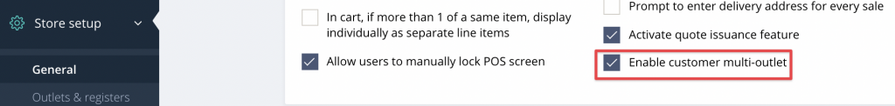<figcaption>General Rules</figcaption></figure>


<h2>Customised receipts</h2>


<p>In the past few months, we’ve been receiving feedback on the font sizes on the receipts. We’ve listened to your feedback and now introduced ability to change receipt font sizes. On your receipt, you can now apply font sizes to different data items individually. This allows you to design your receipts to suit the needs of your target customers.</p>


<figure class="wp-block-image size-large">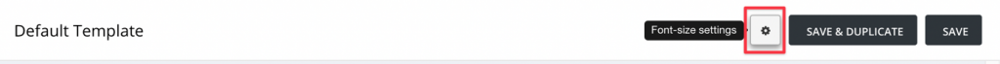</figure>


<p>The setting page can be accessed by clicking on the gear button on the editing page of receipt templates.</p>


<p>Also, one more option has been added to A4 receipts. You can print product barcodes on them.</p>


<figure class="wp-block-image size-large">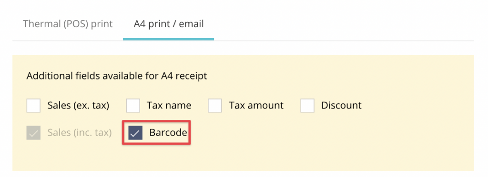</figure>


<p>Please note: the feature to customise font sizes is only available to one-store or higher plans.</p>


<h2>Editing quotes</h2>


<p>If you haven’t learned the quote feature which we released late 2020, it’s never too late. Here’s a support article on <a href="https://help.hikeup.com/portal/en/kb/articles/how-to-issue-a-quote">how to issue a quote</a>.</p>


<p>The update we did for this feature in April takes the user experience to the next level. You cashiers can edit quotes at any time as long as they haven’t been converted to sales or discarded. It’s as simple as reopening the quote from sales history and making the change. Detailed instructions can be found in the support article linked above.</p>


<p>Please note: quote feature is only available to one-store or higher plans.</p>


<h2>Managing delivery for in-store sales</h2>


<p>Delivery service used to be mainly used in eCommerce stores, seldomly for in-store sales. However, COVID has brought a lot of changes to the way a business is run. Succession to the support of <a href="https://help.hikeup.com/portal/en/kb/articles/how-to-set-a-delivery-address-for-a-sale">recording delivery addresses in a sale</a>, we support adding shipping charge in the invoice, too.</p>


<figure class="wp-block-image size-large"></figure>


<p>Compared to the workaround of using a non-inventory product to record it, the benefits of using the new feature are as follows.</p>


<ul><li>It won’t be counted as a line item in an invoice by mistake.</li><li>It’s excluded from sales summary and sales report on items, so that it makes your report cleaner.</li></ul>


<p>Moreover, another enhancement we have implemented is that the delivery address can be added or updated easily on the process sales screen by clicking on the truck icon to the right of the customer.</p>


<figure class="wp-block-image size-large"></figure>


<p>Please note: the feature to manage deliver addresses is only available to one-store or higher plans.</p>


<h2>New integration: Deputy</h2>


<p>Deputy is a renowned HR management platform. If you are still managing the roster of your staff separately on Hike and Deputy, the process can be automated now. The build-in integration added in Hike supports the synchronisation of the following data.</p>


<ul><li>Users</li><li>Rosters</li><li>Sales totals processed by each user</li></ul>


<h2>Sync composite products with Neto</h2>


<p>Composite products in Hike are used to create product bundles, while the feature is called kitted products in Neto. With the release of the new feature, you can now manage the composite products either from Hike or Neto, as per your convenience. Besides products, the sales of them can also synchronise in both ways and the inventory will be updated accordingly.</p>


<p>If you want to understand a bit more about composite products, please refer to <a href="https://help.hikeup.com/portal/en/kb/articles/creating-adding-products-in-hike#How_to_Add_Composite_Products_in_Hike">how to add composite products in Hike</a>.</p>


<h2>Hiding costs in transfers and purchase orders</h2>


<p>Product costs are confidential to businesses. Thus, you may not want all your staff to view the costs though they will need to use stock transfers or purchase orders. Two new options have been added in user permission, with which you can hide costs without disabling your staff to handle transfers and purchases.</p>


<h2>A new gender option for customers</h2>


<p>To avoid offending customers due to gender issues, Hike allows you to choose “Prefer not to say”, if your customer doesn’t want to use male or female to define the gender. The new option can be updated via import and can synchronise to the eCommerce platforms supporting similar features, like Neto and Magento.</p>


<h2>Optimisation on display and reports</h2>


<p>To help our clients getting more data with fewer clicks, we’ve added a few more filters and enhanced the reporting section. Here’s a brief list of them.</p>


<ul><li>On the product listing page (Products > Products), a new option has been added to show tax-exclusive prices.</li><li>On the sales history page (Point of Sale > Sales history), a new checkbox has been added for you to choose whether to include discarded sales and quotes in the list.</li><li>On the purchase order listing page (Inventory > Purchases), the purchase orders are sorted by order date from the latest to the oldest.</li><li>In the emails of custom reports, outlet name has been added to the email subject. Without opening the attachment, you will know which outlet the report is about.</li><li>In the sales by category report, more sales data have been added.</li></ul>


<h2>Upgraded video tutorials</h2>


<p>Apart from adding new features, our team has been also producing video tutorials to help you understand how to use Hike. The <a href="https://help.hikeup.com/portal/en/kb/articles/video-tutorials">30 videos</a> have covered most existing features, and we are recording more. If you are a video lover like me, or if you are still new to Hike, please feel free to watch them.</p>


<p>Please stay tuned, more updates are already cooking and on the way!</p>
<p>The post <a rel="nofollow" href="../../../april-2021-newsletter/index.html">April 2021 Newsletter</a> appeared first on <a rel="nofollow" href="../../../../index.html">Hike POS Software</a>.</p>
]]></content:encoded>
					
		
		
			</item>
		<item>
		<title>March 2021 Newsletter</title>
		<link>https://hikeup.com/blog/march-2021-newsletter/</link>
		
		<dc:creator><![CDATA[Hiren Savjiyani]]></dc:creator>
		<pubDate>Thu, 25 Mar 2021 13:32:14 +0000</pubDate>
				<category><![CDATA[What's new in Hike]]></category>
		<guid isPermaLink="false">http://hikeup.com/?p=52578</guid>

					<description><![CDATA[<p>Hi, everyone. We didn’t make much noise in February because we’ve been working on some major feature updates, which hopefully will benefit your business and make your life easy. Apart from improving the robustness of reporting and integrations, we’ve released many exciting updates. Here they come! New eCommerce integration: Magento If you enjoy DIY when&#8230; <a href="../../../march-2021-newsletter/index.html" class="more-link">Read more</a></p>
<p>The post <a rel="nofollow" href="../../../march-2021-newsletter/index.html">March 2021 Newsletter</a> appeared first on <a rel="nofollow" href="../../../../index.html">Hike POS Software</a>.</p>
]]></description>
										<content:encoded><![CDATA[
<p>Hi, everyone. We didn’t make much noise in <span id="more-52578"></span>February because we’ve been working on some major feature updates, which hopefully will benefit your business and make your life easy. Apart from improving the robustness of reporting and integrations, we’ve released many exciting updates. Here they come!</p>


<h2>New eCommerce integration: Magento</h2>


<p>If you enjoy DIY when building your eCommerce store, Magento might be one of the top options. We’ve released the build-in integration with Magento, with which you can seamlessly sync the following data between Hike and Magento.</p>


<ul><li>Product details &amp; variants</li><li>Product categories</li><li>Customer profiles</li><li>Sale transactions</li><li>Payment history</li><li>Inventory</li></ul>


<h2>A new option of integrated payments in US</h2>


<p>Clearent is supported as an integrated payment option in United States. As of now, the support model is PAX A80. You will be able to initiate payment processing, refund, voiding, and batch settlement from Hike.</p>


<p>If you are interested in using Clearent with Hike, please feel free to contact our sales or support team.</p>


<h2>A new scanner app on iOS and Android</h2>


<p>With the new scanner app, Hike has made performing stocktake and receiving purchase orders much easier for you. You don’t need a physical scanner with you when counting your inventory or what you just received. The camera of your phone and the app will do the job. Grab your smart phone, open the app, and simply scan.</p>


<p>Here’s a short list of what you can do in the app.</p>


<ul><li>Create a stocktake</li><li>Update actual stock of products manually or by scanning</li><li>Share the scanned result in a csv</li><li>Receive a purchase order by scanning</li><li>Create a product</li></ul>


<h2>Optimised performance and user experience</h2>


<p>Every few weeks, Hike tries to optimise the performance and experience in different scenarios. Here’s a short list of the main optimisations implemented in the past month.</p>


<ul><li>The processing of product import is more than 2 times faster than before if you have multiple outlets</li><li>The process of processing Elavon and TD Bank payments is simplified, which saves you one click for each transaction.</li><li>SKUs are now shown in stock transfers. In case you have similar products or product names in a transfer, it will be easier to identify the product by SKU.</li></ul>
<p>The post <a rel="nofollow" href="../../../march-2021-newsletter/index.html">March 2021 Newsletter</a> appeared first on <a rel="nofollow" href="../../../../index.html">Hike POS Software</a>.</p>
]]></content:encoded>
					
		
		
			</item>
	</channel>
</rss>
